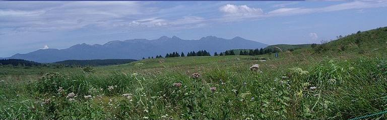

二日目を見に行く
二日目を見に行く

毎度の格安ツアーを利用して、今回は志賀高原へ行って来ました＼(^_^)/
気になるお値段は…ぬわぁんと
８．９００円也
え！？
一泊でその値段とは食事内容が質素だとか、お部屋がぼろっちいに違いないって？
まあね…そういうことはあまり期待しないということをくれぐれも念押しを致しまして…というには、志賀高原というところは冬場はスキー場として人気のあるところで、観光ホテルというよりはスキー客の宿泊施設なんですね。
内容は、ホテルについてからのお楽しみということに致しまして、なにせお値段がお値段ですから、（６月の初旬までに申し込めば１０００円割引という特典も利用してますし）二日間の昼食は各自持ちです。
参加者は１１名という大所帯となり、食事の時は席が決まっているので全員揃っていますが、時間内に行動しなければならない団体旅行なので、誰それがいないとか探している間にトイレにも行きそびれてしまうことになりかねないので、暗黙の了解で 適当にグループ分かれとなり、全員一緒に歩いているのはバスを降りたしばらくの時間だけでしたねぇ。
出発当日はお天気にも恵まれ、午前８時出発のバスに乗り込んでも、始めて顔を合わせる人あり、友達旅行初体験者あり、こんな時にしか顔を合わせない人ありで、まあ 賑やかなことこの上なく、ツアー会社も心得たもので 座席は最後部の二列をあてがわれておりました。（＾－＾；
バスは集合場所である名古屋駅から一宮インターへと向かい、名神高速道から小牧ジャンクションを経て、中央高速道へ…
恵那山トンネルを通り過ぎたあたりから、この時期は クリスマスツリーの飾りつけのようにたわわに実る赤いりんごの木々が目に入ってきます。
スワンのボートが浮かぶ諏訪湖を車窓に眺めて高速道から下り、諏訪大社上社の境内をプチ散策し、今では幻の駅弁となった横川の釜飯屋さんにて昼食タイム。
もとよりお弁当として売っていた釜飯ですので、汁椀やお漬け物の器はお持ち帰りできませんが、素焼きのお釜はお値段（税込み１．０５０円）の内に入っていますので、そのまま食べっぱなしで置いて帰ろうが、持って帰ろうが それは自由なので、賢い主婦は考えます。
「梅干しなんか入れて、テーブルの上に置いておいてもいいんじゃない？」
確かにちゃんとした蓋がついていますし、お釜のかたち自体がレトロ感覚で楽しいので、コーヒーシュガーやキャンディー入れにしてもそれなりにかたちになりそう…ということで、割れ物で重いながらもお土産第一号と相成りました。
ちなみに、ガイドさんの言うことには 火にかけても大丈夫だそうで、一人分のお粥を炊く時などにも便利だそうです。
近年無料化になった「ビーナスライン」を裏口から登るかたちになるそうですが、白樺湖を眼下に眺めながらバスはぐんぐんと山道を登り、次に散策タイムを取ったのは霧ヶ峰のパーキングエリアです。
「霧ヶ峰」という名前が付いているからには、霧が立ちこめていることが多いのだろうと思いますが、なんの なんの さすがに晴れ女の旅行とあってドピーカン（非常にいいお天気）でございました。（＾０＾ｖ
有料（店内にあるもの）と無料（屋外にあります）のトイレがあり、勿論無料のトイレを使用した私達は、高原の空気を満喫すべくパーキングの駐車場を通って道路を渡り、鞍を付けた２頭の馬（これに乗って草原を見て回れます）を見ながら道なりに進んだ先が小高い丘になっており、
「済州島を思い出すねぇ…」
と、Ｙさんが目を細めて言います。

済州島では枯れ草ばかりでしたが、ここでは「キリン草」「マツムシ草」「あざみ」などが綺麗に咲いており、何よりもグライダーのメッカでもあるそうで、澄み切った青い空の広がる頭上をゆったりと飛んで、飛行場があるらしき丘の向こうに消えていきますが、その丘の左手(写真上↑）の開けた向こうに富士山のような山があれば、本当によく似た景観でした。
富士山といえば、霧ヶ峰の辺りからは年に１３回くらいしかその雄姿を拝むことができないそうですが、そのかたちが遠くにですがはっきり見え、山好きな人が隣の席に座っているものならば、
「あれが浅間山で、あれがナンタラ山で…」
と、事細かに説明をしてくれたことでしょうが、山というものは富士山以外には区別のつかない私には、残念ながらどこへ行っても同じで、ただ遠くまでよく見えたというだけでした。（＾ｍ＾；
さてさて、うねうねとうねるビーナスラインの山道を、存分の視界環境にて、ガイドさんの言葉に右へ左へと首の運動を繰り返しながらも下り、またまた登ってホテルに到着です。
ホテル前の広い駐車場でバスを降りるなり、
「うっ!！」
なにやら臭い匂いに迎えられて、長雨のあとでの肥料の匂いだろうか？と思いながらも割り振られた部屋に行くと、そこにも同じ匂いが充満しており、カビの匂いかなぁ？とまずは部屋の窓を開け放ち、まだ明るい時間でもあったので、ホテル近辺を探索することになりました。
登ってきた道路の途中に三つの池があり、その一番近い池に行くことにして道路を下り始めますと、すぐ目の前のホテルの庭の 延長のようなところからリフト乗り場があり、
「おおー！スキー場なんだ」
と、今更ながら再認識をしながら、
「なんだか臭いけど、花の肥料の匂いだろうか？」
「たまごが腐ったような匂いだよね…」
と話していると、
「○っこでもまった（した、又は撒いた）のかと思った」
と、のほほんとさり気なく言うＭさん。
匂いの正体は判明しないままに丸池に到着し、ボート小屋がありましたが人っ子一人おらず、お世辞にも澄んでいるとは言えないような池でしたが、魚は沢山いるらしくあちこちで水紋ができており、水辺に近付いてみますと小魚もいました。
山菜採りが得意なＭさんはボート小屋に近付いて、
「これが山ぶどう」
などと教えてくれますが、食べられる物がぶら下がっているわけでもないので、みんな適当に返事をして あまり興味を示さず、写真を写したりしてホテルに引き返そうという頃には、いつの間にかＭさんの手には一握りの山蕗が収穫されていました。
夕食のメインは陶板焼きで、ちょっとした野菜と豚肉と牛肉が二切れずつ入っており、探せばみつかるような松茸とキノコの土瓶蒸しに、茶碗蒸し、そうめんと卵豆腐、オレンジの皮を器にしたサラダ…と、六品もあれば上等です。
デザートは途中のお土産屋さんでＨさんが買ってきた産地直売の小玉すいかをご相伴に与る予定になっており、冷たい水道水の出る洗面所に冷やしてあるそうですが、さて これをどうすればいいのか？と悩んでいます。
物事をあまり深く考えない私は
「包丁なんて 食堂かフロントで借りてくれば良いんじゃない？」
と、いたって簡単に考えていたのですが、
「エエー！？ 何か悪さをするんじゃないかと思われるんじゃないの？」
と、世間の交流常識をわきまえている奥様方の足は、なんとなくフロントの手前の方で止まっています。
「すみませーん！ 包丁貸してくださーい」
スタスタとフロントに近付くなり、声をかけると、
「包丁でございますか？」
と、フロントの男性が聞き返します。
「はい。 どんなものでもいいのですが…」
と、後ろの方で
「あの あの すいかを…ゴニョゴニョ」
遠慮がちなＨさんの声が、決してホテルの金庫を襲うのではないということを、解って貰おうと小声で説明しています。
無事果物ナイフが借りられ、これですいか割りの楽しみがなくなりました。（＾_＾；
お風呂に行こうとしていると、花火が始まるというのでまたぞろ外へ繰り出し、人波について道路沿いに坂道を上がっていきますと、色とりどりの丸い提灯がぶら下げられた広いお祭り会場があり、大勢の人が集まっていました。
観光客用に行われるお祭りだそうで、ちょうど私達が食事をしている頃に「椅子取りゲーム」などがあるとガイドさんから聞いていましたが、「ミスなんたらコンテスト」がこれから始まるというところで、蓮池という池に四角いステージが浮かべられ、我こそは美女なりと名乗り出た一人一人が紹介されたのですが、スポットライトは当てられているものの、あまりにも遠くて特別（非公認）審査員にもなれず、
「惜しかったなぁ…もうちょっと早く知っていたら応募したのに」
などと、夜闇に紛らわせてしか言えないような空恐ろしい発言もあったような…（＾m^
「大蛇祭り」の由縁たるお芝居らしきものも、池に浮かべられたそのステージとボートを駆使して演じられましたが、これも遠くてよく見られず、うちのダンナのように どこへ行くにも双眼鏡を持って来なきゃいかんかなぁ？…と、ひとり腹の中で考えたりもして…
池のこちら側から見ていますと、反対岸の方には大きなホテルがありまして、あのホテルに泊まった人たちは特等席になりそうで、このお祭りの協賛金は一番なんだろうな…などと余計なことを考えたりしながらも、花火の上がるのを待つ。
わ！ わ！ わぁー!
火の粉が頭の上から降ってきそうなくらい近い!！。
花火といえば、名古屋の矢田川や 岐阜の長良川のような大きな河川敷で上げる花火しか見た記憶がなく、どちらも民家が近くにあるので堤防の上から見てもとても高く、こんなに近くではじける花火は見たことがありません。
池の端から端に架けられていた二本のロープの仕掛け花火も、１０メートルと離れていない場所から見られ、子供のように大歓声を上げながら、次々と繰り広げられる花火の競演に見入ってしまい、３０分があっという間に過ぎ去りました。
偶然ながらもお祭りの日に訪れることができ、大変ラッキーな旅行になったとまたまた儲けたような気分でした。
花火が終わってしまってもいつまでも残っている火の粉があると思っていたら、それは花火に負けまいと光り輝いている火星で、空気がきれいなせいか、それはそれは大きく見え、興奮さめやらぬ気持ちのままホテルまで帰ってきました。
やっとお風呂に入ってみると、温泉ではないとガイドさんも言っておりましたが、硫黄の匂いのする温泉で、翌朝になって、ガイドさんも訂正されておりました。
Ｍさんたちのお部屋にお邪魔してすいかをいただき、ワイワイと話しておりますと、友達旅行初体験のＫさんが、
「私、アレが気になって…」
と言われてみて指さす方向を見てみますと、壁紙の一部がぺろんと剥がれておりまして、
「ああいうのを見ると、ついつい直したくなっちゃって…」
と、ここまで来てそんな仕事をしたくならなくてもよさそうなものなのに、
「またフロントで糊を借りてくる？」
と、冗談交じりに言ってみて、しげしげと部屋の中を見回してみますと、ところどころの壁紙の端っこがぺろんぺろんと剥がれており、ドアは怪我をしているし…と、みすぼらしい感じでしたが、私達の部屋は継ぎ接ぎながらちゃんと補修がしてあり、例え剥がれていようが直したくなんてならなかったでしょうねぇ（＾_＾；
作成:2004-09-29
コメントはこちら
二日目を見に行く